|
|
|
|
|Instituto Tecnológico de Costa Rica|Escuela de Matemática| M. Sc. Geovanni Figueroa M. |
|
|
Ecuaciones en variables separadas Las ecuaciones diferenciales de primer orden son las más simples de resolver, al menos en teoría. Muchos problemas de la física, biología, economía, ingeniería, etc., conducen a problemas de valor inicial que involucran ecuaciones de primer orden. Durante muchos años los matemáticos se esforzaron por resolver tipos específicos de ecuaciones diferenciales. Debido a esto existen hoy en día muchas técnicas de solución, algunas de las cuales estudiaremos.
Observación: una ecuación de la forma:
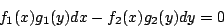
puede transformarse en una ecuación en variables separadas al dividir por el factor 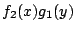
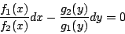
y al integrar obtenemos la solución
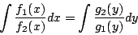
Tenga presente que al dividir por el factor puede perder soluciones que anulan este factor, las cuales pueden ser soluciones singulares.
Ejemplo
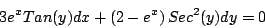
Dividiendo por el factor 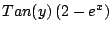 obtenemos
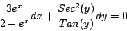
Y al integrar
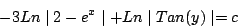
Simplificando
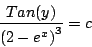
Observe que el factor
es cero
cuando 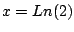 y 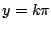 con
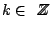y al sustituirlas en
la ecuación original se comprueba que son soluciones, pero se
obtienen de la solución general tomando 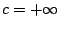 y
Ejemplo
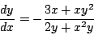
Encuentre el miembro de la familia que pasa por el punto 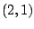. Separando variables
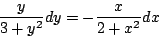
Integrando
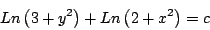
Simplificando
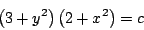
Evaluando en el punto obtenemos que 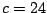, con lo cual el miembro de la familia buscado es
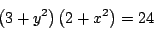
La recta tangente a la curva 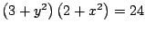 en el punto se muestran en la figura 1.1.
Ejemplo La ecuación diferencial ordinaria
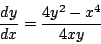
no es separable, pero se convierte en separable al hacer el cambio de variable 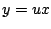. Al tratar de separar variables llegamos a la ecuación
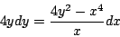
la cual no es separable. Por otro lado, al hacer el cambio de variable
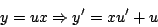
con lo que al sustituir en la ecuación diferencial obtenemos
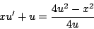
y simplificando
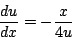
la cual es separable. Al integrar llegamos a la solución
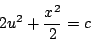
Volviendo a la variable original
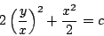
la cual es la solución buscada.
|